Regulate with me
Home
Letter to Self
Strength Maps
Goal-Setting Framework
My Personal Brand
Time Management Tracker
Midterm Output
Regulate With Me
POV: It’s Me — My Creative Campaign
Running and Weightlifting
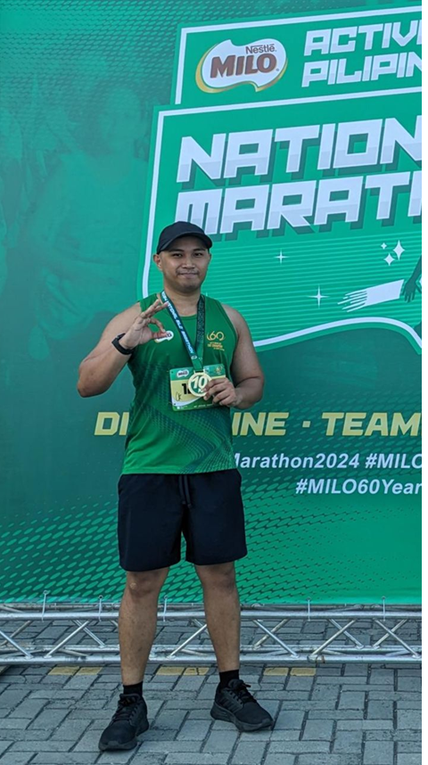
Playing games
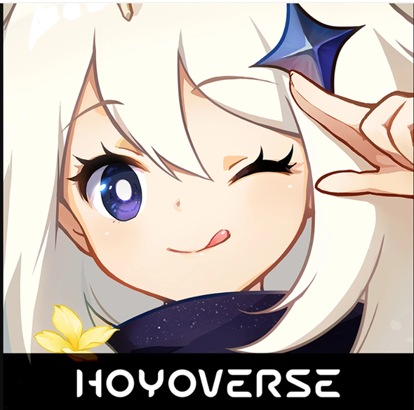
Watching TV shows and movies
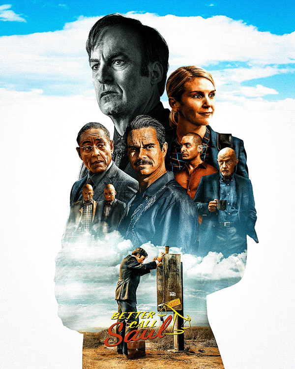
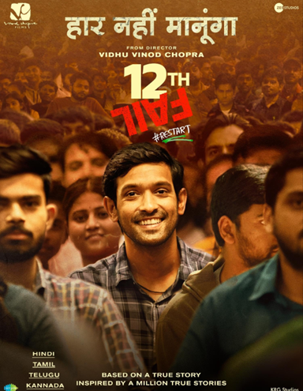
 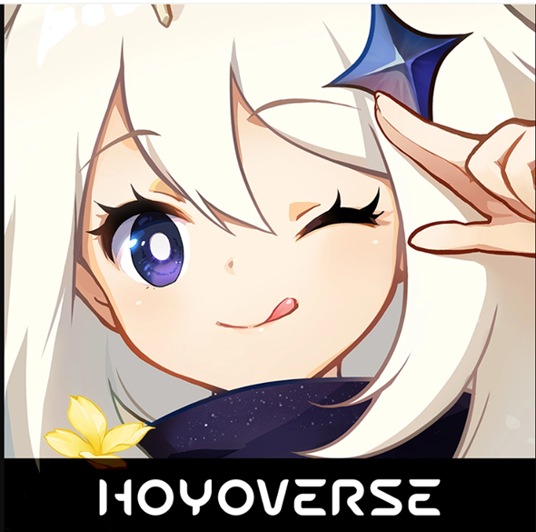
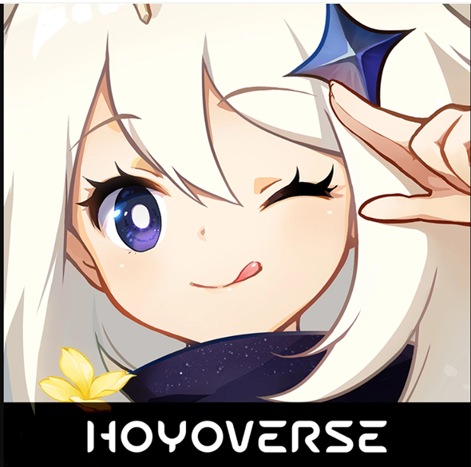


 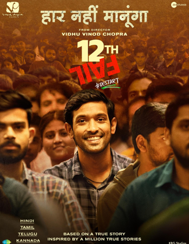
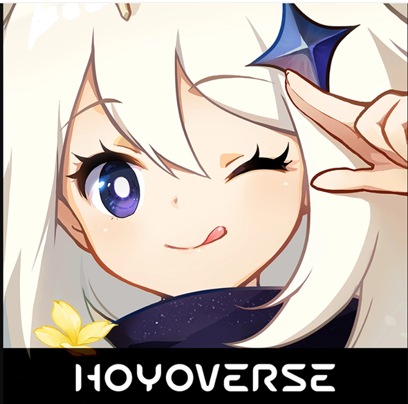
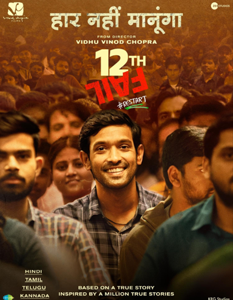
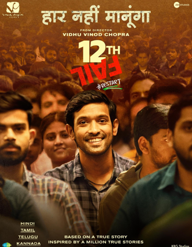
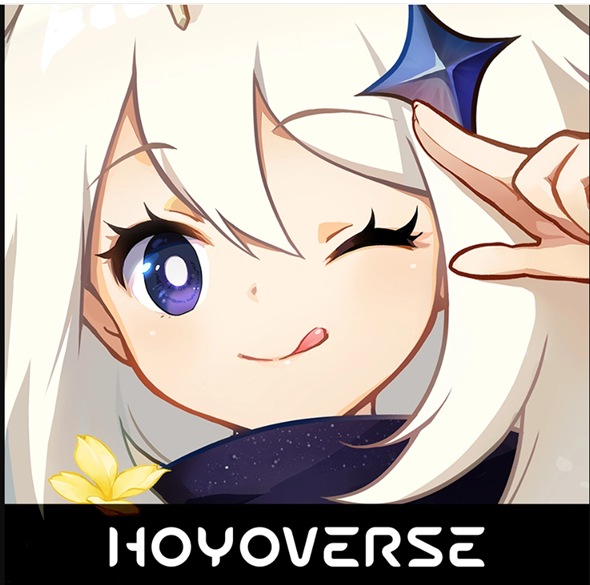
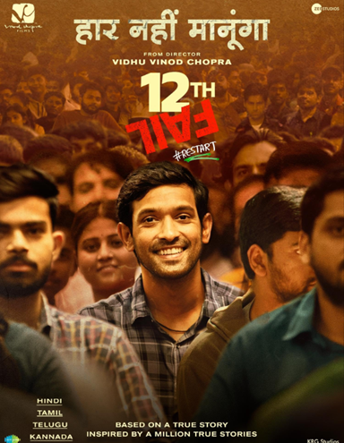